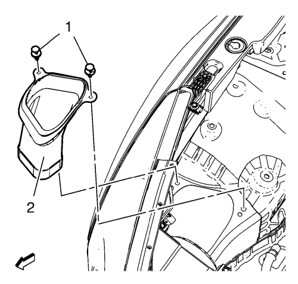
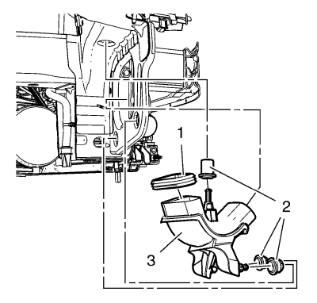

Cruze
Sustitución del aislante del resonador del conducto de aire
Procedimiento de desmontaje
Extraiga el conjunto del filtro de aire. Consultar
Sustitución del filtro de aire
.

Desmonte el anillo de bloqueo del conducto de aire de admisión trasero (1).
Desmonte el conducto de aire de admisión trasero (2).
Desmonte el conducto de aire de admisión. Consultar
Sustitución del conducto de aire de admisión
.

Desmonte el resonador del conducto de aire de admisión (3).
Desmonte el sellador del resonador del conducto de aire (1).
Desmonte los 3 aislantes del resonador del conducto de aire (2).
Procedimiento de montaje
Monte el sellador del resonador del conducto de aire (1).
Monte los 3 aislantes del resonador del conducto de aire (2).
Monte el resonador del conducto de aire de admisión (3).
Monte el conducto de aire de admisión. Consultar
Sustitución del conducto de aire de admisión
.
Monte el anillo de bloqueo del conducto de aire de admisión trasero (1).
Monte el conducto de aire de admisión trasero (2).
Monte el conjunto del filtro de aire. Consultar
Sustitución del filtro de aire
.
© Copyright Chevrolet. Reservados todos los derechos